Un projet ne s'arrête pas aux plans : il se joue dans les détails, les choix, les proportions, les matières.
Je prends en charge la fourniture complète du mobilier, dans la continuité naturelle du projet afin qu'il s'adapte parfaitement à vos espaces.
Tables, chaises, canapés, décoration, art de la table ... Retrouvez le lieu fidèle à ce que vous avez imaginé.


sélection mobilier
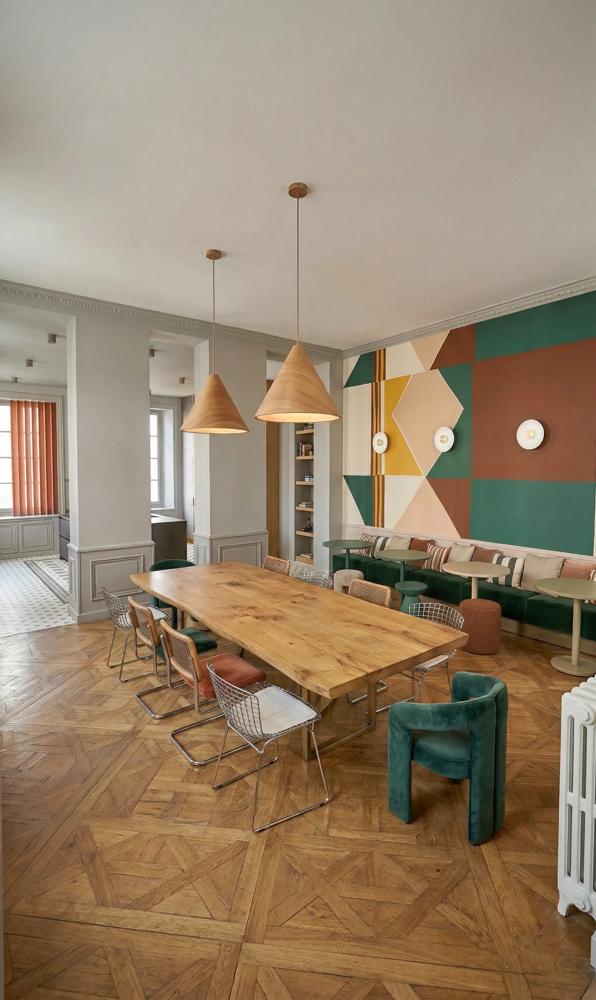
Je travaille avec des marques professionnelles, choisies pour :
- La qualité des matériaux
- La précision des finitions
- Leur caractère différenciant
En fonction du projet préalablement dessiné, je sélectionne et vous propose plusieurs éléments en accord avec votre projet.
Vous choisissez en toute simplicité, avec une vision claire.
Chercher, comparer, commander, gérer, relancer ...
Je m'en occupe pour vous.
Une fois votre sélection effectuée, je gère les commandes, les réceptionne, les contrôle et vous assure la livraison sur place de l'ensemble des produits le même jour.
En tant que garant du résultat final, je sélectionne les produits adaptés à vos besoins, à vos espaces pour assurer la cohérence du concept initial : dimensions précises, finitions durables, matériaux adaptés.
Exemples

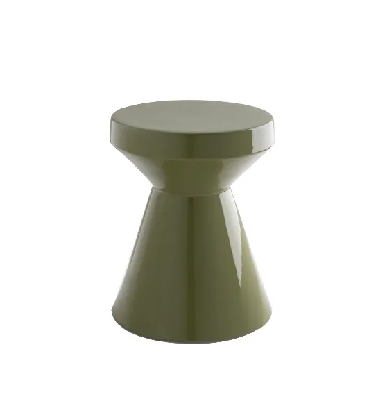
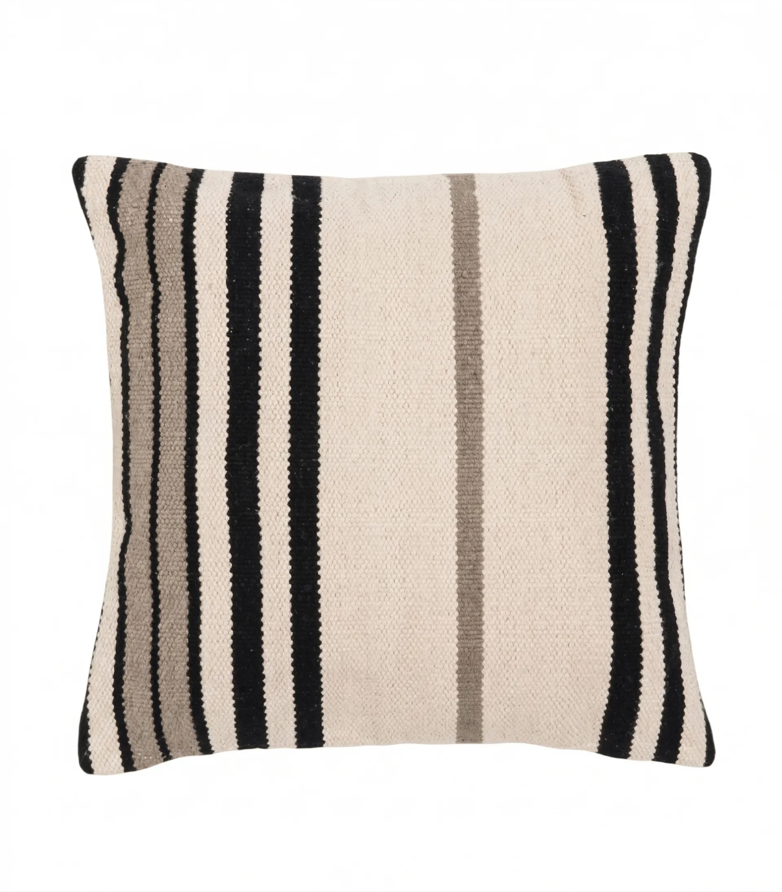
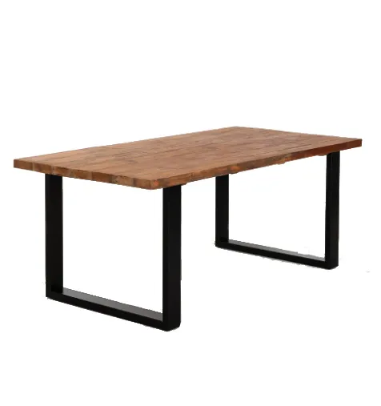
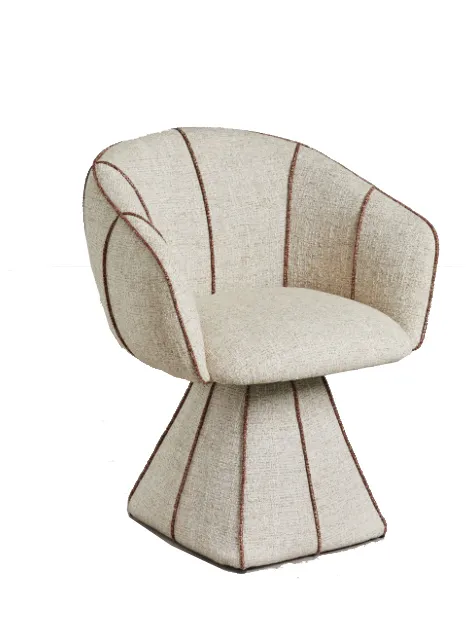
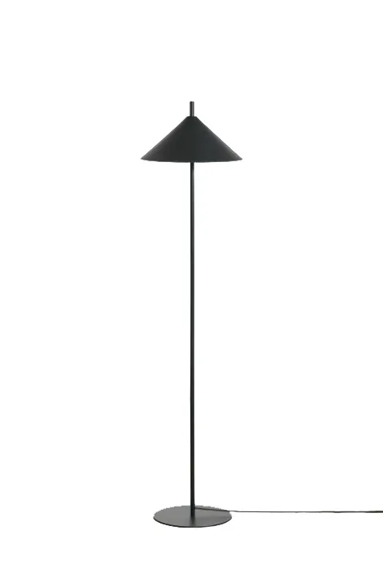

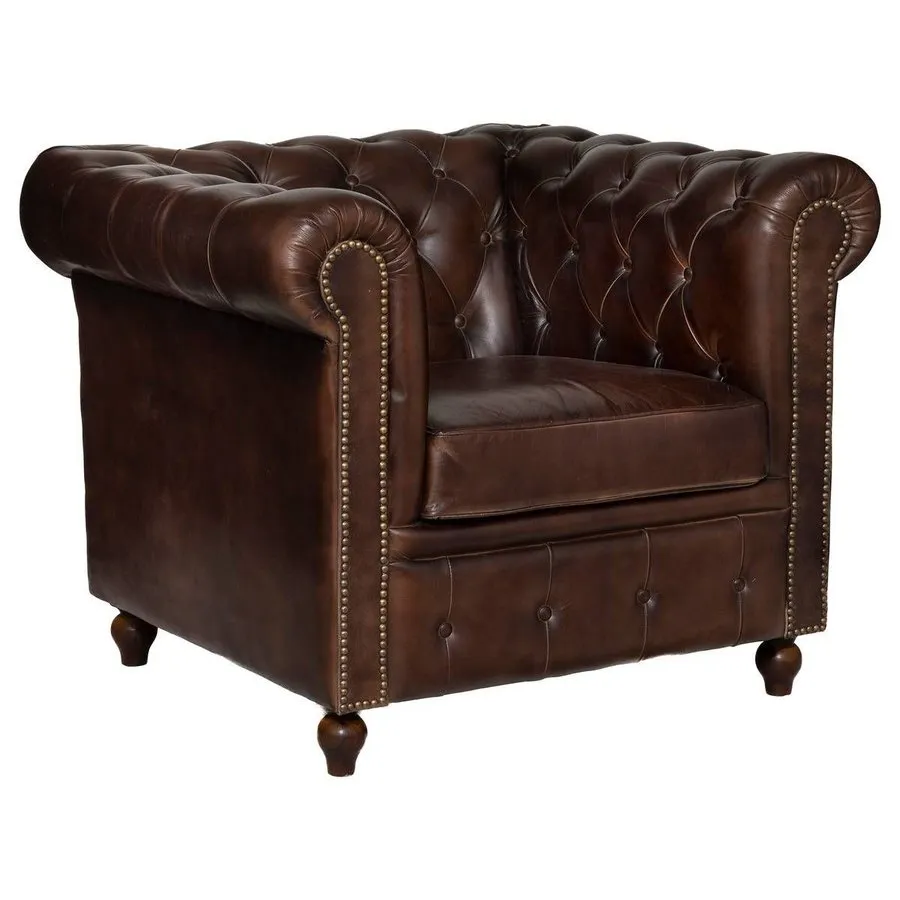


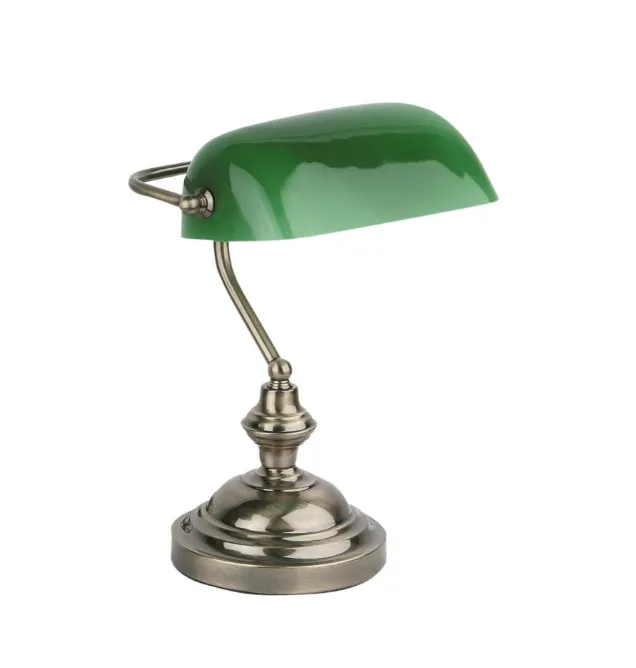
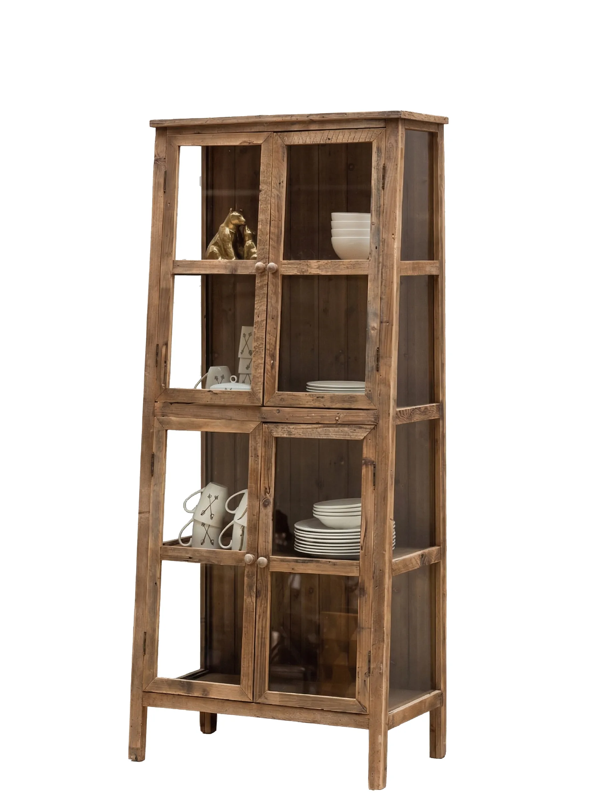

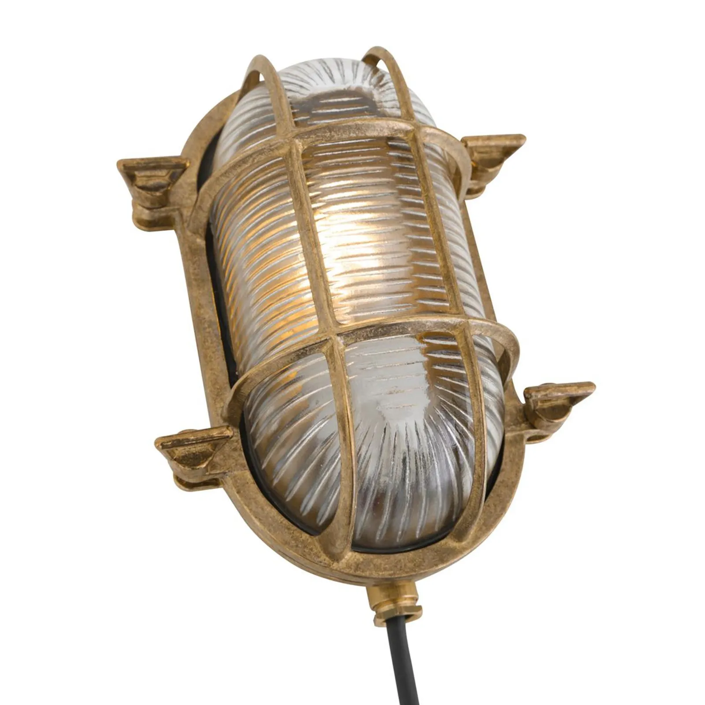


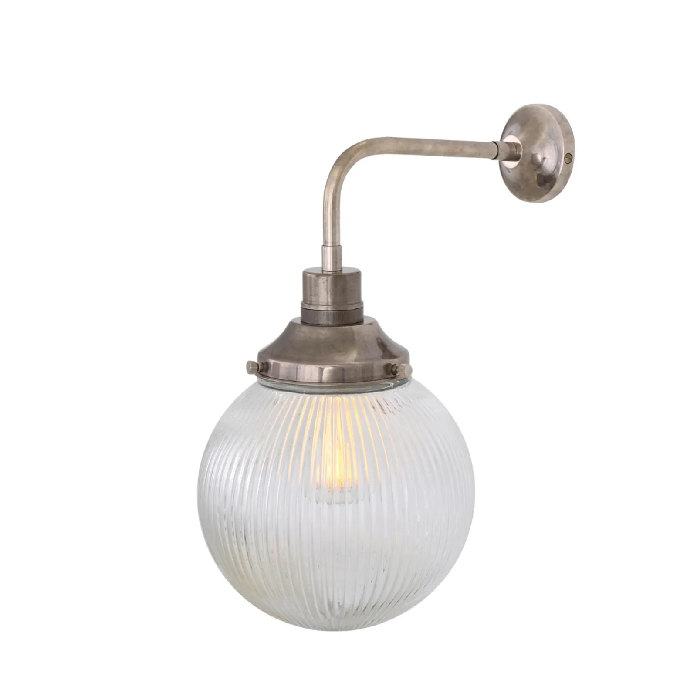

Avis clients

Nous avons fait appel à Mr Cousseau dans le cadre des démarches de notre projet locatif.
Nous sommes très satisfaits de sa prestation. Il aura été de bons conseils sur le projet, les visuels étaient très pro et nous ont permis de nous projeter facilement en terme d'aménagement et de décoration.
Il a suivi au plus près le dossier auprès du service urbanisme et à été très réactif quand il a fallu effectuer des modifications afin de faire en sorte que celui-ci aboutisse rapidement.
Je recommande vivement.
Nous avons fait appel à Alexandre pour le projet d’aménagement et de rénovation de notre maison, située sur la commune de Plescop.
Il a tout de suite compris le style que nous souhaitions et nous a proposé des plans et des visuels magnifiques, avec de très bonnes idées et conseils.
Bien que sa prestation soit terminée, il reste malgré tout à notre écoute en cas de besoin, et nous accompagne jusqu’au bout du projet. Maintenant, nous avons hâte que notre projet voie le jour.
Vous pouvez lui faire confiance les yeux fermés. Merci Alexandre !
Un grand merci à Alexandre pour son excellent travail sur notre projet de réagencement intérieur de notre maison.
Les idées d'aménagement et la qualité des visuels 3D nous ont permis de nous projeter à 100%.
Bravo et merci!
Vous avez un projet de rénovation ou d'aménagement ?